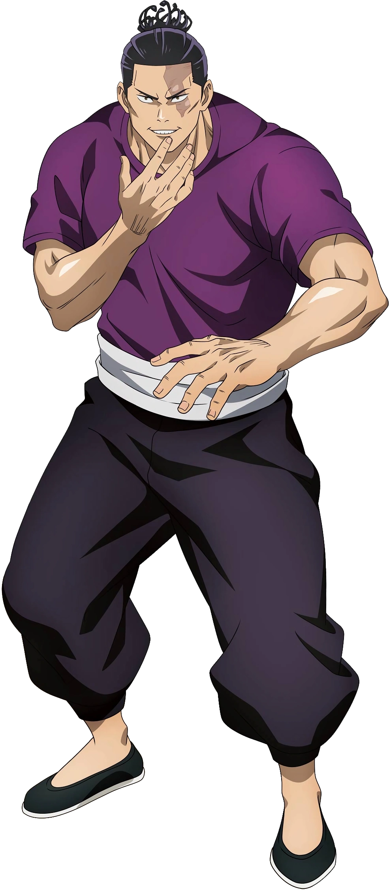

.jpg)
Навігація
ХарактеристикиАой Тодо (東堂葵とうどうあおい Tōdō Aoi?) — второстепенный персонаж Jujutsu Kaisen. Студент третьего года обучения в Технической школе магии в Киото и Маг 1-го ранга. В юности его наставником была Юки Цукумо, а лучшим другом он считает Юдзи Итадори. Аой — молодой человек с высоким и очень четко выраженным мускулистым телосложением, примерно того же роста, что и Сатору Годжо. У Тодо очень рельефное, крепкое, мускулистое телосложение и относительно загорелая кожа. У него черные глаза и черные волосы до плеч, которые почти всегда связаны в пучок с необычными развевающимися прядями и закругленными концами, похожими на множественные тычинки цветка, что соответствует значению его имени. Одной из его самых заметных черт является большой шрам, спускающийся по левой стороне лица Тодо, который он получил от суровых тренировок с Юки. Во время боя Аой никогда не надевает рубашку и обычно надевает свои фирменные штаны для боевых искусств и тапочки. Его обычные брюки подчеркнуты бирюзово-голубым поясом. Обычно Аой предпочитает носить обычные футболки и рубашки с воротником. Он также носил шорты, играя в пинг-понг, а не обычные брюки. В своих фантазиях, посещающих среднюю школу вместе с Юдзи Итадори и Такадой-чан, Аой носит школьную форму, состоящую из черного пиджака, который Аой оставил открытым, чтобы показать фиолетовую рубашку под ним. Даже в этих фальшивых воспоминаниях Аой носит свой синий пояс вместе с брюками. Во время инцидента в Сибуе Тодо пришлось отрезать себе левую руку, чтобы избежать полной трансфигурации от Махито, и серьезно повредить правую ладонь, ударив Махито по руке, чтобы поменяться с Юдзи. Аой Тодо — очень необычная личность с крайне эксцентричным отношением. Он может показаться всем своим сверстникам просто помешанным на битвах тупицей, потому что ему не только нравится позировать и демонстрировать свои мускулы, но и он наслаждается азартом битвы. Большая часть его личности также вращается вокруг его очень громкой любви к его любимому высокому поп-идолу Такаде-тян. Он часто поднимает ее тему в разговоре и отказывается опаздывать на ее шоу или встречи, несмотря ни на что. Тодо даже иногда визуализирует разговор с Такадой, когда ведет внутренний диалог с самим собой. В детстве Тодо был исключительно сильным, но из-за своей подавляющей силы он чувствовал, что его жизнь была обыденной. Все изменилось, когда он встретил Юки Цукумо , и он с теплотой вспоминает, как его скука перевернулась с ног на голову. Юки представилась ему, спросив: «Какие девушки тебе нравятся?» — крылатая фраза, которую Тодо начал использовать сам. Ответ Мегуми наскучил Тодо до слез. Ответ Мегуми наскучил Тодо до слез. Тодо ненавидит скуку больше всего на свете. Он спрашивает людей, какие девушки им нравятся, чтобы иметь о них представление, и его реакция на их ответы может сильно различаться. Когда Мэгуми дал ответ на этот вопрос, который Тодо посчитал скучным, он избил первокурсника до полусмерти. Тодо был особенно раздражен в этом случае, потому что Юта Оккоцу, достойный противник, не будет присутствовать на последней программе обмена для Тодо, поэтому он чувствовал, что оно пройдет без происшествий. Ему также не нравится никто из его однокурсников в старшей школе Киото, потому что он разочарован их ужасным вкусом в отношении женщин. На этапе планирования программы обмена, Тодо не проявил абсолютно никакого интереса к «изгнанию сосуда Сукуны » и сказал своей команде и директору Гакугандзи, что их планы глупы, и он убьет их, если они снова попытаются ему приказывать. Юдзи признался, что у него такой же вкус к женщинам, как и у Тодо, из-за чего реакция Тодо сильно отличалась от его реакции на Мэгуми. Воспоминание о событии, которое даже не произошло, заполнило голову Тодо, и он искренне верил, что это правда. Воспоминание было о том, как Юдзи утешал Тодо после того, как его отвергла Такада. С этого момента в сознании Тодо он всегда был лучшим другом Юдзи и считал, что никто не сможет победить их в их родном городе. Даже вернувшись в реальность, Тодо прослезился и сказал Юдзи, что они лучшие друзья, сбив с толку первокурсника.
| Ім'я Головного персонаж | Aoi Todo |
| Раса | Человек |
| Возрасть | 15 лет |
